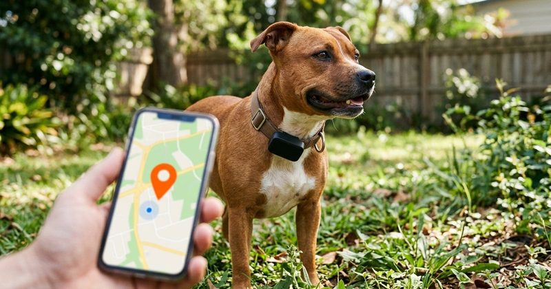
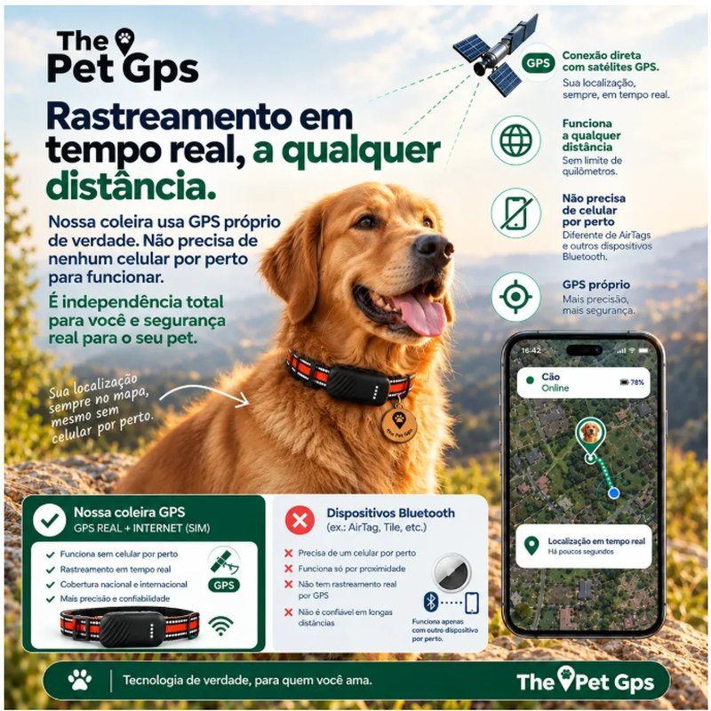
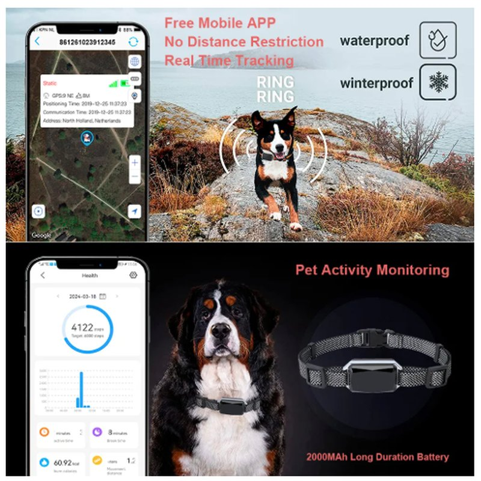
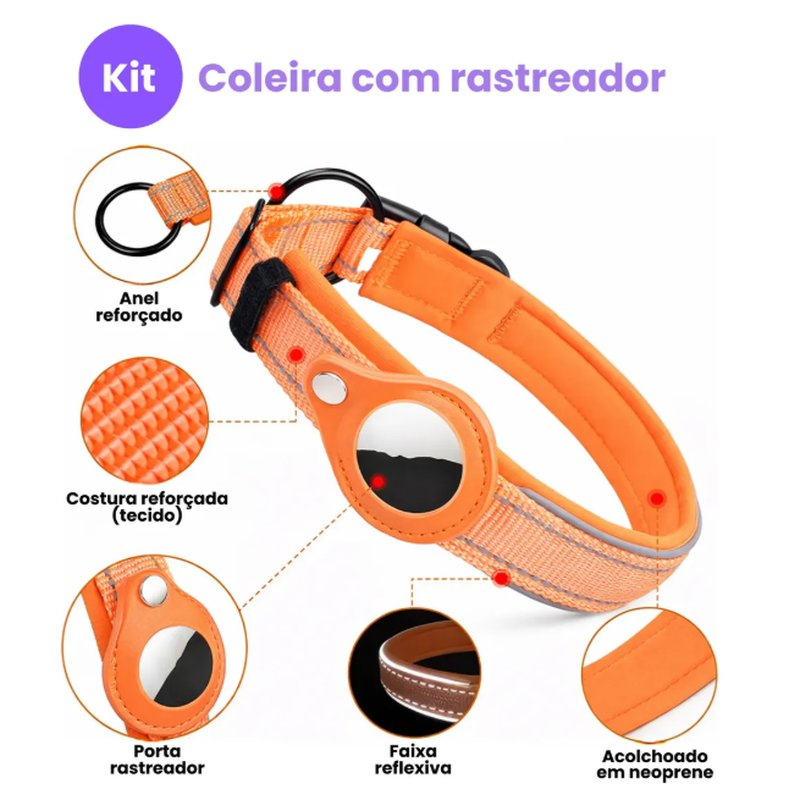
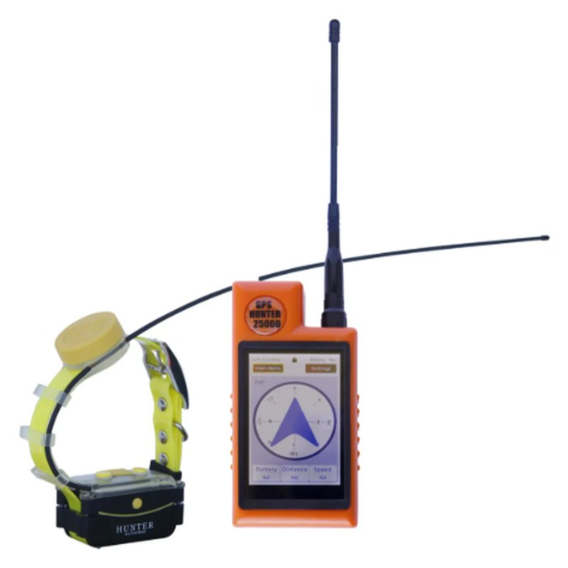
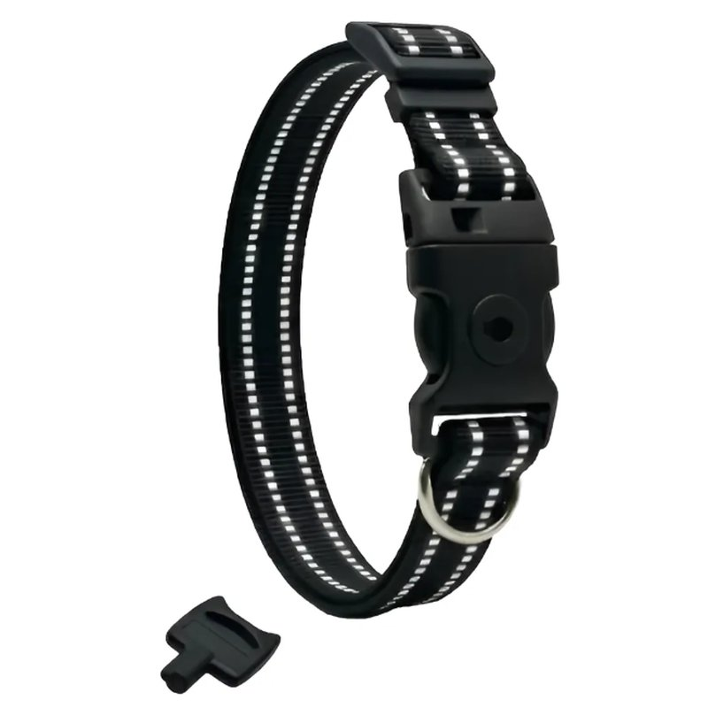

Coleira GPS para Cachorro: As 5 Melhores Coleiras Rastreadoras de 2026

A melhor coleira GPS para cachorro, entre os modelos que comparamos, é a The Pet GPS 4G: tem GPS e chip 4G interno com 12 meses de rastreamento inclusos, localiza o cão a qualquer distância onde houver sinal 4G e a bateria dura até 7 dias, por R$ 718 no Mercado Livre em 12/11/2026. Com orçamento menor, o ANXK G58 é um rastreador 4G com IP67 por R$ 217,99, mas deve exigir chip à parte. Para cão de cidade e dono de iPhone, o kit coleira com tag Apple custa R$ 123,38, sem mensalidade. Em fazenda ou trilha sem sinal, só uma coleira GPS de caça por rádio resolve.
Quer ver o preço da mais indicada? The Pet GPS 4G, com chip e 1 ano de rastreamento inclusos.Link de afiliado — sem custo extra para você.
Ver preço no Mercado Livre →Escolha rápida
- Melhor no geral, para cão que foge ou passeia longe: The Pet GPS 4G (R$ 718, chip e 1 ano de dados inclusos)
- Rastreador 4G mais barato: ANXK G58 (R$ 217,99, IP67, mais o chip)
- Mais barata e sem mensalidade, para iPhone: kit coleira com tag Apple (R$ 123,38, do P ao GG)
- Caça, sítio e trilha sem sinal: GPS-25000 com controle remoto (R$ 4.999,90, até 25 km)
- Para proteger contra furto: coleira KeyLock com chave (R$ 219,90)
Comparativo: as 5 Coleiras Rastreadoras para Cachorro
A tabela reúne lado a lado cada coleira de GPS para cachorro que selecionamos, a coleira rastreadora com tag Bluetooth e o complemento antifurto. Preços consultados no Mercado Livre em 12/11/2026; eles mudam com frequência, então confira no link antes de comprar.
| Modelo | Tipo | Preço | Alcance | Mensalidade | Bateria | Tamanhos | Nota no ML | |
|---|---|---|---|---|---|---|---|---|
| The Pet GPS 4G | GPS 4G | R$ 718 | Ilimitado (onde há 4G) | 12 meses inclusos | Até 7 dias | P, M e G (20 a 80 cm) | 4,5 (51) | Ver preço |
| ANXK G58 4G | GPS 4G | R$ 217,99 | Ilimitado (onde há 4G) | Chip com plano de dados* | 2.000 mAh | Cães médios e grandes | 5,0 (1) | Ver preço |
| Kit coleira + tag Apple | Tag Bluetooth | R$ 123,38 | Depende de iPhones por perto | Sem mensalidade | Pilha CR2032 | P, M, G e GG (30,5 a 54,5 cm) | 4,5 (74) | Ver preço |
| GPS-25000 de caça | GPS por rádio | R$ 4.999,90 | Até 25 km em campo aberto | Sem mensalidade | Coleira 1.800 mAh | Cães médios e grandes | Sem avaliações | Ver preço |
| KeyLock antifurto | Coleira (sem GPS) | R$ 219,90 | — | — | — | P, M (30 a 50 cm) e G | Sem avaliações | Ver preço |
GPS 4G, Tag Bluetooth ou GPS de Caça: Qual Rastreador para Cães Escolher
Antes de escolher o GPS da coleira do cachorro, escolha a tecnologia. Muitos anúncios chamam de "coleira GPS" o que, na verdade, é uma tag Bluetooth, e a diferença decide se você vai achar o cão ou não.
| Rastreador GPS 4G | Tag Bluetooth | GPS de caça (rádio) | |
|---|---|---|---|
| Como localiza | GPS por satélite, enviado pela rede 4G ao app | Celulares de desconhecidos que passam perto | GPS na coleira, enviado por rádio ao controle remoto |
| Alcance | Ilimitado, onde houver sinal 4G | Depende de gente com celular por perto | Até 25 km em campo aberto |
| Tempo real | Sim | Não; mostra a última detecção | Sim |
| Custo | R$ 200 a R$ 800, mais dados móveis | R$ 120 a R$ 210, sem mensalidade | A partir de cerca de R$ 5.000, sem mensalidade |
| Bateria | Dias, recarregável | Cerca de 1 ano, pilha | Recarregável, coleira e controle |
| Melhor para | Cão que foge, passeios longos, condomínio grande | Cão de cidade, fugas curtas | Caça, sítio, trilha sem sinal |
O comparativo detalhado entre chip de operadora e Bluetooth está em coleira GPS Bluetooth x chip de operadora, e o passo a passo técnico em como funciona a coleira GPS para cachorro.
As 5 Melhores Coleiras GPS para Cachorro em 2026
Os dados de cada modelo vêm do anúncio no Mercado Livre e das avaliações publicadas por compradores. Não testamos os aparelhos; veja como escolhemos.
The Pet GPS: Coleira GPS 4G com 1 ano de rastreamento incluso

É a coleira GPS mais completa que encontramos para cães no Mercado Livre: o módulo tem GPS próprio e chip 4G interno já habilitado por 12 meses, então você não compra chip nem paga mensalidade no primeiro ano. A posição aparece no app a qualquer distância, desde que haja sinal 4G (o anúncio cita Vivo e Claro), e a coleira avisa no celular quando o cão sai da área segura.
| Preço | R$ 718 em oferta relâmpago (preço cheio R$ 799,90) ou 10x de R$ 71,80 sem juros |
|---|---|
| Rastreamento | GPS + 4G com chip interno, em tempo real e sem limite de distância. Não depende de Bluetooth nem de celular por perto |
| Mensalidade | 12 meses inclusos. Depois, a renovação é opcional, sem fidelidade, contratada no app; o anúncio não informa o valor |
| Bateria | Até 7 dias em uso normal, menos no modo de busca intensa. Carregador magnético |
| App | The Pet GPS (Android e iOS): tempo real, histórico do trajeto, cerca virtual com alerta de fuga, alarme sonoro, compartilhamento com a família, registro de passeios, vários cães na mesma conta |
| Tamanhos | P: 20 a 30 cm (cães pequenos) · M: 30 a 50 cm (médios) · G: 50 a 80 cm (grandes) |
| Módulo | 42 g, 6 x 3,3 x 1,9 cm, resistente a chuva, lama e banho de mangueira |
| Identificação | Tag com QR Code: quem encontra o cão escaneia e vê o contato do tutor, sem app |
| Anatel | Homologação nº 027552207968 |
| Garantia | 30 dias do vendedor, mais 30 dias de devolução grátis do Mercado Livre |
- Chip 4G e 1 ano de rastreamento inclusos
- Funciona a qualquer distância, sem depender de celulares por perto
- Até 7 dias de bateria, a maior entre os rastreadores 4G da lista
- Fita refletiva com LED e tag QR Code de identificação
- Homologado pela Anatel, suporte em português e nota 4,5 com 51 avaliações
- Preço alto para quem só quer uma tag
- O valor da renovação depois de 12 meses não aparece no anúncio
- Parte dos compradores critica a precisão da localização, segundo o resumo de opiniões do Mercado Livre
- Dentro de casa e em lugares cobertos o GPS perde precisão, como em qualquer rastreador
🐾 The Pet GPS 4G com chip e 1 ano de rastreamento inclusos: veja o preço de hoje.
Ver preço no Mercado LivreLink de afiliado: podemos receber uma comissão por compras feitas através deste link, sem custo adicional para você.
Rastreador GPS ANXK G58 4G para Cães

Custa menos de um terço da The Pet GPS e também é um rastreador 4G de verdade, com GPS, Wi-Fi e torres de celular para localizar o cão. Tem proteção IP67, bateria de 2.000 mAh e garantia de 90 dias, vendido pela loja oficial Topshop. O ponto fraco é a falta de histórico: o anúncio tem só uma avaliação.
| Preço | R$ 217,99, ou R$ 220,39 no Pix na loja oficial Topshop |
|---|---|
| Rastreamento | 4G LTE Cat-1, com GPS, AGPS, Wi-Fi e LBS (torres de celular), em tempo real |
| Mensalidade | *O anúncio não informa se o chip vem incluso. Rastreadores 4G da ANXK, como o G68, pedem chip com plano de dados comprado à parte. Confirme com o vendedor |
| Bateria | 2.000 mAh. O anúncio fala em "mais de 20 horas de uso contínuo"; em espera, a duração costuma ser bem maior |
| App | Android e iOS: tempo real, cerca geográfica com alerta, contador de passos e calorias |
| Água | IP67: protegido contra poeira e imersão temporária. Serve para cão que nada ou brinca na chuva |
| Garantia | 90 dias do vendedor, mais 30 dias de devolução grátis do Mercado Livre |
- Rastreador 4G real por cerca de R$ 218
- IP67, a melhor proteção contra água entre os GPS 4G da lista
- Bateria de 2.000 mAh, maior que a de muitos rastreadores pequenos
- Loja oficial e garantia de 90 dias
- Só 1 avaliação publicada
- Provavelmente exige chip com plano de dados à parte
- O anúncio não informa o peso do módulo nem o nome do app
- A coleira tem fecho comum, sem trava antifurto
🐾 Rastreador GPS 4G ANXK G58 com IP67: veja o preço de hoje no Mercado Livre.
Ver preço no Mercado LivreLink de afiliado: podemos receber uma comissão por compras feitas através deste link, sem custo adicional para você.
Kit Coleira para Cachorro com Tag Rastreadora Compatível com Apple (Ideashop)

Para quem tem iPhone e mora na cidade, é a forma mais barata de colocar um localizador no cão: coleira acolchoada e tag de 9 g que entra na rede Buscar da Apple, por cerca de R$ 123. Não é GPS: a localização só atualiza quando um iPhone passa perto do cão. Em área urbana isso costuma acontecer rápido; em sítio ou trilha, quase nunca.
| Preço | R$ 123,38 (de R$ 237,90) ou 12x de R$ 12,19. Na captura, o anúncio mostrava "últimas 3 unidades" |
|---|---|
| Rastreamento | Bluetooth na rede Buscar da Apple, com Modo Perdido. Não tem GPS |
| Compatibilidade | Só iPhone e iPad com iOS 14.5 ou superior. Não funciona com Android |
| Mensalidade | Nenhuma |
| Tag | Kwlboey, 9 g, pilha CR2032 não recarregável |
| Tamanhos | P: 30,5 a 35,5 cm (Pinscher, Yorkshire, Shih Tzu) · M: 35,5 a 44,5 cm (Beagle, Bulldog Francês) · G: 42 a 50,5 cm (Border Collie, Husky) · GG: 48 a 54,5 cm (Labrador, Golden, Pastor Alemão) |
| Coleira | Náilon, poliéster e neoprene, faixa refletiva, anel reforçado. A coleira não é resistente à água |
| Vendedor | Ideashop, MercadoLíder Gold, mais de 10 mil vendas; +500 vendidos neste anúncio |
- O mais barato da lista, sem mensalidade
- Tamanhos do P ao GG, com indicação por raça
- Coleira acolchoada e refletiva, com envio Full
- Nota 4,5 com 74 avaliações
- Não é GPS: em área com pouca gente, a localização não atualiza
- Só funciona com iPhone
- Algumas avaliações relatam dificuldade para localizar o cão
- A coleira não é resistente à água
🐾 Kit coleira para cachorro com tag para o app Buscar do iPhone.
Ver preço no Mercado LivreLink de afiliado: podemos receber uma comissão por compras feitas através deste link, sem custo adicional para você.
Coleira GPS de Caça com Controle Remoto LCD (GPS-25000 Pro Compass)

É outra categoria: não usa chip nem internet. A coleira envia a posição por rádio para um controle remoto com tela de 3,5", que mostra direção e distância do cão em até 25 km em campo aberto (2 a 7 km em mata fechada, segundo o anúncio). Serve para caça, trilha e sítio sem sinal de celular. Para cão de cidade, é caro demais e desnecessário.
| Preço | R$ 4.999,90 ou 12x de R$ 480,57. Na captura, o anúncio mostrava "última em estoque" |
|---|---|
| Rastreamento | GPS na coleira, transmitido por rádio (antena VHF) ao controle remoto. Atualização configurável de 1 a 120 segundos |
| Alcance | Até 25.000 m em áreas abertas; 2 a 7 km em ambientes acidentados, segundo o anúncio |
| Mensalidade | Nenhuma: não usa chip nem rede celular |
| Controle | Tela sensível ao toque de 3,5", bússola, até 9 coleiras no mesmo controle, bateria de 4.000 mAh, carga USB-C |
| Coleira | IP67, bateria de 1.800 mAh, liga e desliga magnético, para cães de porte médio e grande |
| App | Opcional, só Android 7 ou superior via Bluetooth, com Google Maps e histórico do percurso |
| Vendedor | COSMONAUTA, +100 vendas. O anúncio informa que o vendedor não emite nota fiscal e não envia para Alagoas e Paraíba |
| Garantia | 90 dias do vendedor, mais 30 dias de devolução grátis do Mercado Livre |
- Funciona onde não há sinal de celular
- Alcance de até 25 km em campo aberto, sem mensalidade
- Acompanha até 9 cães no mesmo controle
- Coleira IP67 para chuva e mato
- Muito caro para uso urbano
- Vendedor não emite nota fiscal
- Nenhuma avaliação publicada no anúncio
- App só para Android; antena grande, pensada para cães médios e grandes
🐾 Coleira GPS de caça com controle remoto e alcance de até 25 km.
Ver preço no Mercado LivreLink de afiliado: podemos receber uma comissão por compras feitas através deste link, sem custo adicional para você.
The Pet GPS KeyLock: Coleira Refletiva Antifurto com Chave

Não é rastreador: é uma coleira da mesma marca da The Pet GPS com fivela que só abre com chave. A ideia é dificultar que alguém tire a coleira, e o rastreador junto, num furto rápido durante o passeio. Faz sentido para raças visadas e para quem já investiu num rastreador 4G.
| Preço | R$ 219,90 ou 6x de R$ 36,65 sem juros |
|---|---|
| Rastreamento | Nenhum. O anúncio fala em proteger o dispositivo GPS acoplado; confirme com o vendedor a compatibilidade com o módulo que você tem |
| Trava | Fivela de alta resistência que só abre com a chave codificada inclusa |
| Coleira | Náilon preto de 2 cm com costura dupla refletiva, resistente a água, 40 g |
| Tamanhos | P, M (30 a 50 cm) e G |
| Garantia | 30 dias do vendedor |
- Trava com chave dificulta furto da coleira e do rastreador
- Mesma marca do rastreador nº 1 da lista
- Refletiva e resistente a água
- Não tem GPS nem tag
- Ainda sem avaliações (+5 vendidos)
- Em emergência, só abre com a chave: deixe uma cópia com quem cuida do cão
🐾 Coleira antifurto KeyLock com chave: veja o preço de hoje.
Ver preço no Mercado LivreLink de afiliado: podemos receber uma comissão por compras feitas através deste link, sem custo adicional para você.
Tem Android? Opções de Tag para Cães
O kit da lista só funciona com iPhone. Para Android de qualquer marca, procure uma tag certificada para a rede Encontre Meu Dispositivo do Google. Se o seu celular é Samsung Galaxy, a Galaxy SmartTag2 (R$ 145,50 em 12/11/2026, nota 4,8 com mais de 11 mil avaliações e bateria de até 500 dias) é a mais avaliada; prenda-a numa coleira com suporte para tag. Detalhes e outras opções estão no comparativo de coleiras GPS para gato, que vale também para cães pequenos.
Quanto Custa Manter uma Coleira GPS para Cachorro
O preço da etiqueta não é o custo total. Some o que cada tecnologia cobra para continuar funcionando:
| Modelo | Compra | Custo para continuar funcionando |
|---|---|---|
| The Pet GPS 4G | R$ 718 | Nada no 1º ano; depois, renovação opcional no app (valor não informado no anúncio) |
| ANXK G58 4G | R$ 217,99 | Chip de operadora com plano de dados, se não vier incluso |
| Kit coleira com tag Apple | R$ 123,38 | Pilha CR2032 de tempos em tempos |
| GPS-25000 de caça | R$ 4.999,90 | Nada: não usa chip nem internet |
Se a prioridade é não pagar nada por mês, veja a melhor coleira GPS sem mensalidade.
Tamanho Certo por Porte e Raça
- Pequeno porte (Pinscher, Yorkshire, Shih Tzu, Lhasa): pescoço de 20 a 35 cm. Fita P da The Pet GPS ou tamanho P do kit com tag Apple. Prefira o conjunto mais leve; veja o guia de coleira GPS para cachorro de pequeno porte.
- Médio porte (Beagle, Bulldog Francês, Cocker, Schnauzer): 35 a 50 cm. Fita M da The Pet GPS ou M do kit.
- Grande porte (Border Collie, Husky, Labrador, Golden, Pastor Alemão): 42 a 80 cm. Fita G da The Pet GPS, G ou GG do kit, ANXK G58 ou GPS de caça.
Meça o pescoço com fita métrica antes de comprar e deixe espaço para dois dedos entre a coleira e o pescoço: mais folgada, o cão tira; mais justa, machuca.
Coleira de Identificação: GPS, QR Code e Plaquinha
Rastreador e identificação fazem coisas diferentes. A coleira GPS mostra onde o cão está; a identificação diz de quem ele é para quem o encontra. A The Pet GPS já traz uma tag QR Code que mostra o contato do tutor quando escaneada, sem app. Nos outros modelos, vale manter uma plaquinha com nome e telefone. E o microchip continua importante para identificar o cão numa clínica se a coleira se perder: veja a comparação entre coleira GPS e microchip.
Para Cães que Fogem com Frequência
Para o cão fujão, o que importa é ser avisado na hora. Use um rastreador 4G com cerca virtual: você desenha a área segura no app e recebe alerta assim que o cão sai dela. Deixe folga no perímetro para evitar alertas falsos e configure atualizações mais frequentes nos horários de maior risco. Veja o guia de cerca virtual para cachorro e as dicas de coleira GPS para cachorro que foge.
O Que Evitar ao Comprar uma Coleira GPS
- "GPS sem mensalidade" por menos de R$ 100: quase sempre é uma tag Bluetooth, que não tem GPS.
- Anúncio sem ficha técnica coerente: desconfie de "coleira com GPS e IA" sem informar app, bateria, rede usada e peso, ou com medidas impossíveis. Nesta pesquisa descartamos um modelo de quase R$ 1.800 por isso.
- Tag de um ecossistema diferente do seu celular: tag Apple não funciona com Android, e a SmartTag2 só funciona com Samsung Galaxy.
- Rastreador 2G ou 3G: prefira 4G, porque as operadoras estão desligando as redes antigas.
- Coleira de passeio presa à guia junto com o rastreador: um puxão forte pode soltar o módulo. Use peitoral para a guia.
Outros deslizes comuns estão em erros comuns com coleira GPS.
Como Escolhemos
Partimos das buscas por coleira GPS e rastreador para cães no Mercado Livre e descartamos anúncios sem ficha técnica coerente ou com promessas impossíveis. Entre os restantes, priorizamos:
- Tecnologia clara: o anúncio diz se é GPS 4G, tag Bluetooth ou rádio, e com quais celulares funciona.
- Avaliações: número e conteúdo, incluindo as críticas, que citamos nos contras.
- Vendedor: reputação, garantia e nota fiscal. Quando o vendedor não emite nota, avisamos.
- Uma opção por perfil: cão que foge, orçamento menor, cão de cidade, caça e proteção contra furto.
Não testamos os aparelhos fisicamente. Preços e especificações são os do anúncio na data indicada.
Conclusão: Qual Coleira GPS Comprar para o Seu Cachorro
Se o cão foge ou passeia longe, compre um rastreador GPS 4G: a The Pet GPS é a mais completa porque já traz chip e um ano de dados; o ANXK G58 é a opção barata para quem aceita contratar o chip. Se ele vive na cidade e o risco é uma fuga curta, uma tag do ecossistema do seu celular resolve, como o kit com tag Apple para iPhone. Para caça e sítio sem sinal, só a coleira GPS por rádio funciona. Tem gato em casa? Veja o comparativo de coleira GPS para gato, com modelos mais leves.
🐾 A mais indicada para cachorro: The Pet GPS 4G, com chip e 1 ano de rastreamento inclusos.
Ver no Mercado LivreLink de afiliado: podemos receber uma comissão por compras feitas através deste link, sem custo adicional para você.
Perguntas Frequentes
Qual a melhor coleira GPS para cachorro?
Entre os modelos que comparamos, a melhor é a The Pet GPS 4G: tem GPS e chip 4G interno com 12 meses de rastreamento inclusos, localiza o cão a qualquer distância onde houver sinal 4G e a bateria dura até 7 dias. Custava R$ 718 no Mercado Livre em 12/11/2026. Com orçamento menor, o ANXK G58 é um rastreador 4G por R$ 217,99, mas provavelmente exige chip à parte.
Coleira GPS para cachorro tem mensalidade?
Depende da tecnologia. Rastreadores GPS 4G usam dados móveis: na The Pet GPS o primeiro ano vem incluso; em outros, como o ANXK, você paga um chip com plano. Tags Bluetooth (rede da Apple, do Google ou da Samsung) e coleiras GPS de caça por rádio não têm mensalidade.
Qual a diferença entre coleira GPS e tag Bluetooth para cachorro?
A coleira GPS 4G envia a posição do cão sozinha, em tempo real e a qualquer distância. A tag Bluetooth não tem GPS: só aparece no mapa quando um celular compatível passa perto dela. Em cidade grande a tag costuma funcionar; em sítio, trilha ou bairro com pouco movimento, não.
AirTag serve como rastreador para cachorro?
Serve para fugas curtas em áreas urbanas, se você tiver iPhone. A AirTag e as tags compatíveis com a rede Buscar da Apple usam iPhones de desconhecidos para atualizar a localização, sem mensalidade. Para cão que foge para longe ou mora em área rural, prefira um rastreador GPS 4G.
Coleira GPS funciona sem sinal de celular?
Os rastreadores 4G precisam de sinal de celular para enviar a posição. Em fazenda, mata ou trilha sem cobertura, a alternativa são as coleiras GPS de caça que transmitem por rádio para um controle remoto, como o GPS-25000, com alcance de até 25 km em campo aberto segundo o fabricante.
Qual coleira GPS usar em cachorro pequeno?
Prefira módulos leves e coleiras no tamanho certo. A The Pet GPS tem fita P (20 a 30 cm) e módulo de 42 g; o kit com tag Apple tem tamanho P (30,5 a 35,5 cm), indicado para Pinscher, Yorkshire e Shih Tzu, com tag de 9 g. Veja mais no guia de coleira GPS para cachorro de pequeno porte.
Coleira GPS substitui a plaquinha de identificação e o microchip?
Não. A coleira GPS mostra onde o cão está; a plaquinha ou a tag QR Code mostra o contato do tutor para quem encontra o animal; o microchip identifica o cão na clínica se a coleira se perder. O ideal é usar os três.
Mais respostas em dúvidas sobre coleira GPS para pet. Quer vigiar o cão dentro de casa? Veja câmera pet ou coleira GPS: qual escolher.
Escrito por Nildo Alves para o Smart Pet Gadgets. Preços e especificações vêm dos anúncios na data indicada e podem mudar. Veja nossa política editorial e como verificamos as fontes citadas neste artigo.